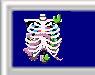

Stickers
VITAL ORGANS
Meidum: Gouache
Year: 2021
Description: Inspired by humanity's need to protect marine wildlife amidst a climate crisis.
I first came up with the concept for this piece in 2019 -- painting that version in watercolor. I later revisited the idea in 2021 and created the final version of "Vital Organs".

"Vital Organs" - Version 2: 2021

"Vital Organs" - Version 1: 2019